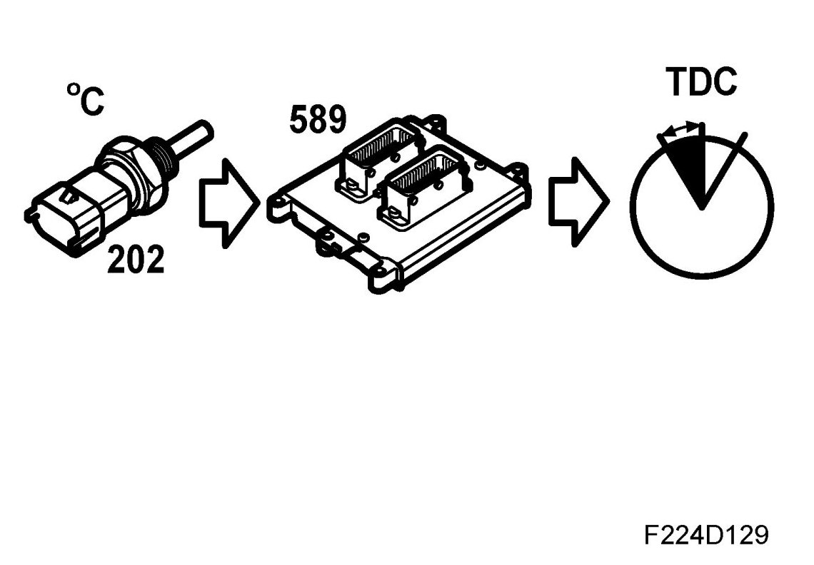

Ignition Timing: Description and Operation
Starting Ignition Timing

This function is used when starting the engine.
Starting ignition timing will be active from when the engine is stationary until the engine speed reaches 500 rpm. The starting ignition timing depends on the engine speed and coolant temperature. Normal starting ignition timing when the coolant temperature is 20 degrees C is 6 degrees BTDC.
Principle, low coolant temperature
Low coolant temperature results in advanced ignition timing to compensate for the lower combustion rate at low temperatures.
Principle, high coolant temperature
High coolant temperature results in retarded ignition timing to compensate for the higher combustion rate at high temperatures.